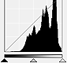
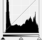

In ScanGear (scanner driver)'s Advanced Mode tab, click  (Histogram).
(Histogram).
 Note
NoteClick Defaults to reset all adjustments in the current window.
Each dot of an image is a mixture of Red, Green, and Blue in various proportions (gradation). These colors can be adjusted individually as a "channel."
Master
Adjust the Red, Green, and Blue combined.
Red
Adjust the Red channel.
Green
Adjust the Green channel.
Blue
Adjust the Blue channel.
NoteOnly Grayscale will be displayed in Channel when Color Mode is Grayscale.
You can see the histogram of a specified area for each Channel. The higher the histogram peak, the more data is distributed to that level.
(1) Bright area |
(2) Dark area |
(3) Whole image |
|  |  | |
More data is distributed to the highlight side. |
More data is distributed to the shadow side. |
Data is widely distributed between the highlight and shadow. |
Select a Channel, then move (Black-point Slider) or (White-point Slider) to specify the level to be set as the shadow or highlight.
- All parts to the left of (Black-point Slider) will be black (level 0).
- The parts at (Mid-point Slider) will turn to the color exactly between the black-point and white-point.
- All parts to the right of (White-point Slider) will turn white (level 255).
When Image Adjustment is set to anything but None, the adjustments shown below are performed automatically.
Move the Black-point Slider or White-point Slider to adjust brightness.
Move the Black-point Slider toward the highlight side.
Move the White-point Slider toward the shadow side.
Move the Black-point Slider toward the highlight side, and White-point Slider toward the shadow side.
Move the Mid-point Slider to specify the level to be set as the middle of the tonal range.
Move the Mid-point Slider toward the highlight side.
Move the Mid-point Slider toward the shadow side.
When you select a Channel and click the Black-point, Mid-point or White-point Dropper, the mouse pointer on the preview image changes to a dropper. Click a Dropper displayed below the histogram to change the setting.
- The point clicked with (Black-point Dropper) will be the darkest point. You can also enter a value (0 to 245).
- The point clicked with  (Mid-point Dropper) will be the middle of the tonal range. You can also enter a value (5 to 250).
(Mid-point Dropper) will be the middle of the tonal range. You can also enter a value (5 to 250).
- The point clicked with  (White-point Dropper) will be the brightest point. You can also enter a value (10 to 255).
(White-point Dropper) will be the brightest point. You can also enter a value (10 to 255).
- Click (Dropper) for Gray Balance and click the area you want to adjust the color in the preview image.
The clicked point will be set as the achromatic color reference, and the rest of the image is adjusted accordingly. For instance, if snow in a photo appears bluish, click the bluish part to adjust the whole image and reproduce natural colors.